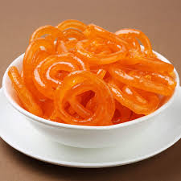

jalebi

Description
Jalebi is a popular Indian sweet made by deep-frying a wheat flour batter in circular shapes and then soaking them in sugar syrup. They are crispy on the outside and juicy on the inside, often enjoyed during festivals and special occasions.
Ingredients:
- 1 cup all-purpose flour
- 2 tablespoons chickpea flour (besan)
- 1/2 teaspoon baking powder
- 1/2 cup yogurt
- 1 cup water (adjust as needed)
- 1 cup sugar
- 1/2 cup water (for sugar syrup)
- 1/4 teaspoon saffron strands (optional)
- 1/2 teaspoon cardamom powder
- Oil for deep frying
Steps:
- In a mixing bowl, combine the all-purpose flour, chickpea flour, and baking powder. Add yogurt and water to form a smooth batter. Cover and let it ferment for 6-8 hours or overnight.
- In a saucepan, combine sugar and water to make the sugar syrup. Bring it to a boil, then simmer until it reaches a one-string consistency. Add saffron strands and cardamom powder. Keep warm.
- Heat oil in a deep frying pan over medium heat.
- Pour the batter into a squeeze bottle or piping bag. Squeeze the batter into the hot oil in circular motions to form jalebi shapes.
- Fry until golden and crisp, then remove from oil and immediately soak in the warm sugar syrup for a few seconds.
- Remove from syrup and place on a plate. Serve warm or at room temperature.
Back to Home